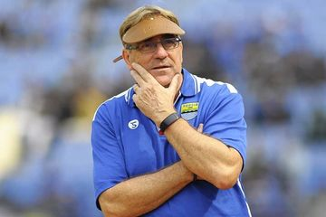
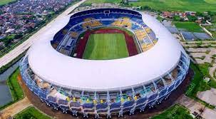
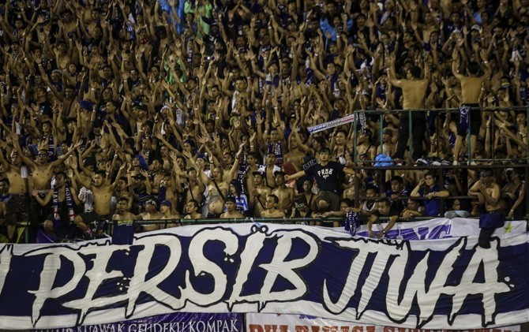
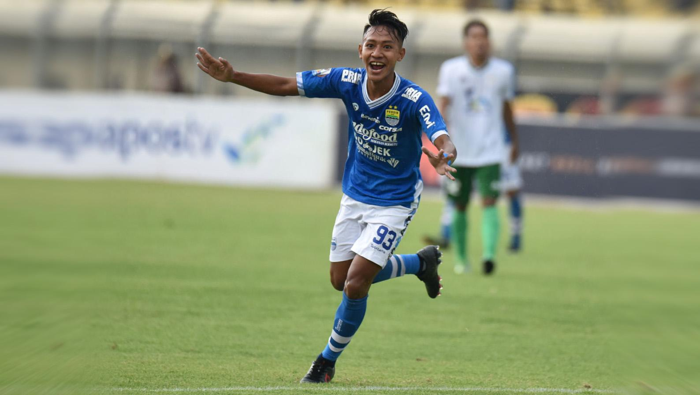
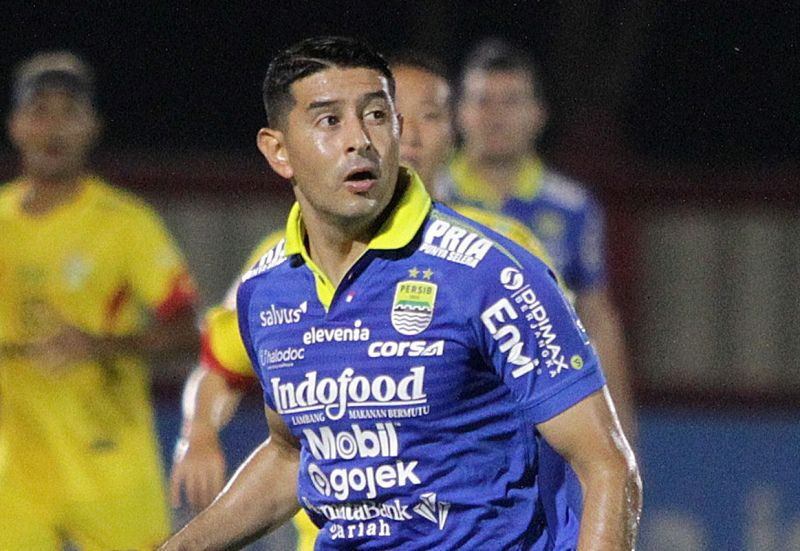

Robert Rene Alberts (lahir 14 November 1954) adalah pelatih sepak bola berkebangsaan Belanda yang saat ini melatih klub Persib Bandung.
Gelora Bandung Lautan Api adalah sebuah stadion olahraga yang berada di Desa Rancanumpang, Kecamatan Gedebage, Kota Bandung, Jawa Barat. Stadion berada di antara ruas Jalan Tol Purwakarta-Bandung-Cileunyi KM 149 dan Jalan Bypass Soekarno-Hatta Bandung. Akses jalan menuju Stadion akan dibuat pintu tol khusus di KM 149 ruas Tol Purbaleunyi dan ruas jalan dari arah Stasiun KA Cimekar dan dari jalan Rancanumpang. Dibuat juga ruas jalan baru menyusuri tol sekitar 2 kilometer, disamping ruas jalan yang sudah ada. Stadion ini menjadi kebanggaan warga Jawa barat
Bobotoh adalah sebutan untuk pendukung klub sepak bola Persib Bandung dari Jawa Barat. Ini merupakan sebutan untuk seluruh pendukung di stadion, meskipun orang tersebut termasuk dalam organisasi kelompok. Pendukung Persib Bandung sekarang tidak hanya dalam ruang lingkup Bandung atau Jawa Barat pada umumnya, banyak dari berbagai luar Jawa Barat membentuk sebuah kelompok pendukung Persib dan datang langsung ke stadion meskipun jarak tempuh yang jauh.
Beckham Putra Nugraha (lahir di Bandung, 29 Oktober 2001) adalah seorang pesepakbola Indonesia yang bermain untuk klub Persib Bandung.
Esteban Gabriel Vizcarra (lahir 11 April 1986) adalah seorang pemain sepak bola Argentina yang saat ini bermain untuk Persib Bandung sebagai gelandang. Selain gelandang, Vizcarra juga bisa ditempatkan sebagai penyerang.
